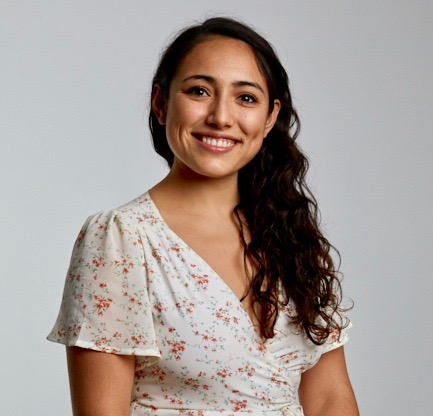

Ana Valeria González
PhD student in Machine Learning and Natural Language Processing at the University of Copenhagen.
February 2020 I will be joining Facebook AI at Menlo Park in September 2020
November 2019 2 papers accepted at the ConvAI workshop at Neurips 2019
August 2019 1 paper accepted at EMNLP 2019
2020-2021 Research Intern, Facebook AI
2018-2019 Data Scientist, BotXO
2016-2017 Research Assistant, Center for Visual Cognition, University of Copenhagen
2013-2015 Research Assistant,UCSD, Language Cognition Lab
2011-2013 Research Assistant, Sanford Consortium for Regenerative Medicine
2018-2021 PhD. in Machine Learning and Natural language processing, University of Copenhagen
2015-2017 MSc. in Information Technology and Cognition,University of Copenhagen
2011-2015 BSc. in Cognitive Science and Neuroscience, University of California, San Diego